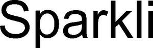

Trade Mark Journal No.2025/034 22 August 2025
WO0000001868281 (9,41,42,45)
Office of origin: Switzerland
Date of International Registration:20 May 2025
Date of designation in the UK:
20 May 2025

International priority date claimed: 8 January 2025
(Switzerland)
(826692)
- Class 9
- Software; software for computers; interactive software; software with artificial intelligence; educational software; educational software for children; educational software using artificial intelligence; software for developing skills and knowledge using artificial intelligence; computer software platforms; application software; software applications; mobile applications; computer programs; electronic databases recorded on computer media; machine-readable electronic data media.
- Class 41
- Education; training and instruction; personalized coaching as a training service; personalized support (coaching) as a training service via digital platforms; personalized support (coaching) as a training service via the Internet; computer-assisted training; organization of training programs for children and/or young people; organization of educational and entertainment events for children and/or young people; providing educational courses, lectures and seminars, as well as youth training programs; publication of educational material; provision of educational materials.
- Class 42
- Computer software development; software design; design, development, installation and maintenance of software; Software as a Service (SaaS); computer Platform as a Service (PaaS); design and development of new technologies for third parties; design and development of computer hardware, software and databases; design of computer programs; design and development of computer games software; design, development and updating of educational software; development of artificial intelligence software for use in skill and knowledge development; development, programming and implementation of software applications; temporary provision of non-downloadable software applications accessible via a website; temporary provision of web-based applications; rental of computer programs and software; all the aforesaid services excluding telecommunication services and/or in the field of the telecommunication sector.
- Class 45
- Software licensing (legal services); licensing of computer software (legal services); licensing of databases (legal services); licensing of technology (legal services).
Sparkli AG
Representative: IPrime Rentsch Kaelin AG, Hirschengraben 1, CH-8001 Zürich, SWITZERLAND